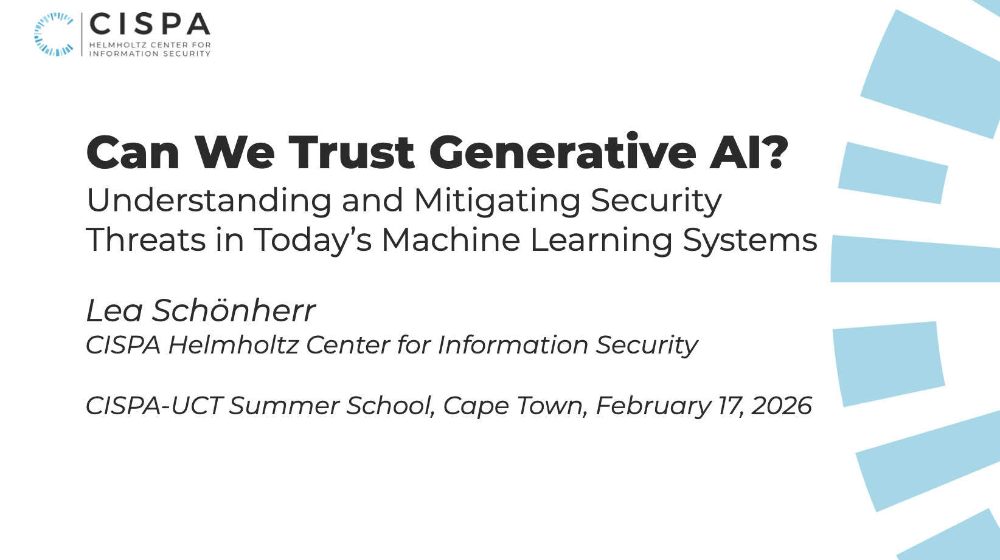

Can We Trust Generative AI? Understanding and Mitigating Security Threats in Today’s Machine Learning Systems
UCT-CISPA Summer School, Cape Town, South Africa 2026
Generative AI (genAI) is becoming more integrated into our daily lives, raising questions about potential threats within these systems and their outputs. In this talk, we will examine the security challenges and threats associated with generative AI. This includes the deception of humans with generated media and the deception of machine learning systems.
In the first part of the talk, we look at threat scenarios in which generative models are utilized to produce content that is impossible to distinguish from human-generated content. This fake content is often used for fraudulent and manipulative purposes. As generative models evolve, the attacks are easier to automate and require less expertise, while detecting such activities will become increasingly difficult. This talk will provide an overview of our current challenges in detecting fake media in human and machine interactions and the effects of genAI media labeling to consumers trust.
The second part will cover exploits of LLMs to disrupt alignment or to steal sensitive information. Existing attacks show that content filters of LLMs can be easily bypassed with specific inputs and that private information can be leaked. From an alternative perspective, we demonstrate that obfuscating prompts offers an effective way to protect intellectual property. Our research demonstrates that with minimal overhead, we can maintain similar utility while safeguarding confidential data, highlighting that defenses in foundation models may require fundamentally different approaches to utilize their inherent strengths.